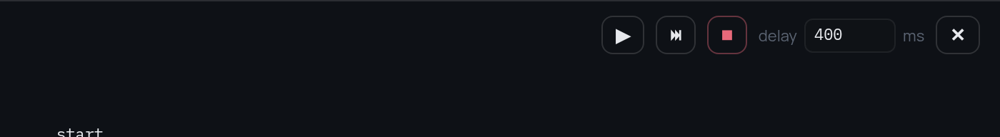
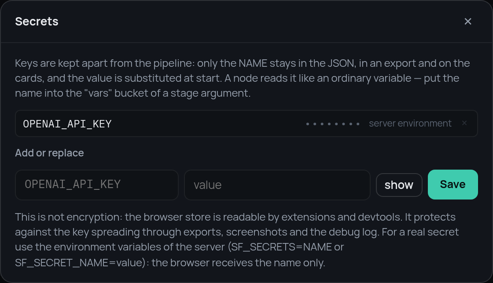

7. Watching it run¶
The graph is finished. The last piece is seeing it work: which node is running, what is in the frame, which road a decision took.
The core has a step debugger, and the editor is a front end for it. Both stop between nodes, show the frame and let you change it.
From Python¶
from stageflow import Pipeline, Session, StepDebugger
debugger = StepDebugger(mode="step", delay=0.0, on_event=print)
session = Session("run-1", Pipeline.from_dict(data), debugger=debugger)
task = asyncio.create_task(session.run()) # stops before the first node
debugger.step() # one node, then stop again
debugger.set_vars({"ticket_id": "T-1006"})
debugger.resume() # run to the end
result = await task
In the editor¶
"Run" → "Debug step by step" asks for the starting variables first. The
defaults from the entry node are the placeholders; fill a field to override
it for this run only.

Then the run stops before the first node and waits.

The buttons are the debugger's commands: continue, one step, stop, and the pause between nodes in milliseconds.

The frame¶
On the left is the frame at the stop point, and every value is editable. A
write is applied before the next node and checked against the declared type; a
mismatch is rejected with a var_rejected event instead of breaking the run.
This is the quickest way to reach a road that is otherwise hard to trigger.
Stop the run before route, set urgency to high, and the ticket that was
about to be answered goes to a person instead.
The events¶
On the right is everything the run reports: which node was entered and left,
which stage started and finished, which case a switch matched, which handler a
try used.

Three lines tell the whole story of step 5: the stage failed, the try caught
it, execution continued at rules.
The result¶
A terminal ends the run. The head of the panel shows the result and the artifacts, and the frame stays there to be read:

The middle column is a text stream. Any event whose payload looks like
{"stream": true, "text": "…", "label": "…"} is shown there, so a stage that
writes an answer piece by piece can be watched as it goes:

Keys¶
The model stage needs an API key, and a key has no business being in a pipeline JSON that gets exported and shared. Give it to the server instead:
The editor asks the backend which secrets it has and gets names only. The
pipeline reads the name as an ordinary variable (api_key ← OPENAI_API_KEY),
the backend substitutes the value when the run starts, and everything on the
way back to the browser shows •••••••• instead of it.

Keys typed into the editor itself live in the browser, not in the JSON, and are sent with the run.
That is the bot¶
Seven steps, and every node type has appeared: entry, stage, condition,
switch, parallel, try, subpipeline, terminal. The
reference has the details of each, and the
example repository
has the finished pipelines, the stages and the data files.